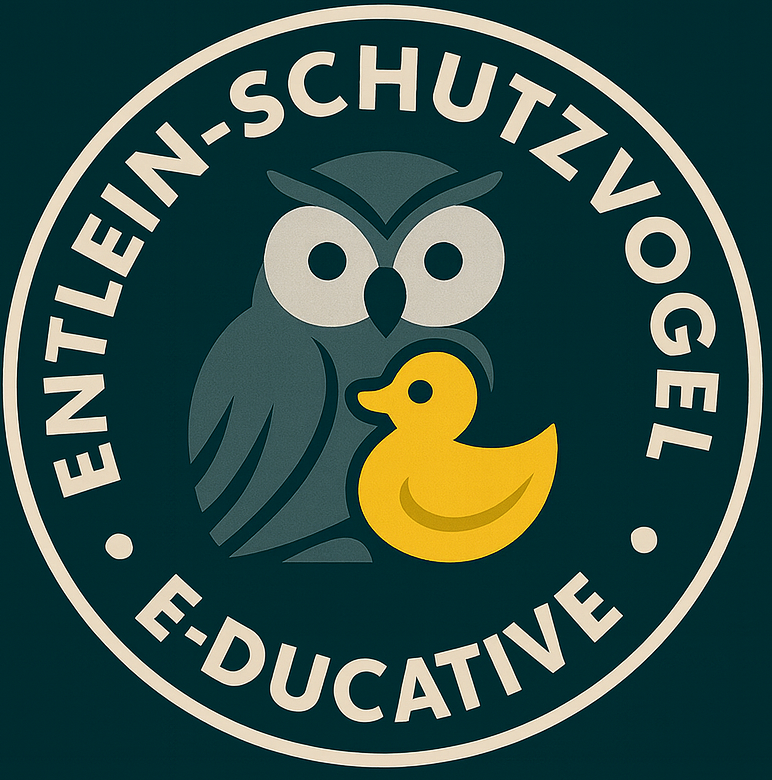

Reto interactivo STEAM: Ciencias naturales
Bienvenidos estudiantes de la Inspectoría San Pedro Claver a este reto STEAM, en el marco de Bosco Skills 2025. Esperamos que disfruten su participación y que tengan una plácida experiencia de aprendizaje interactivo.
Duración total: 100 minutos